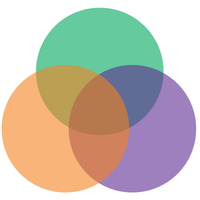
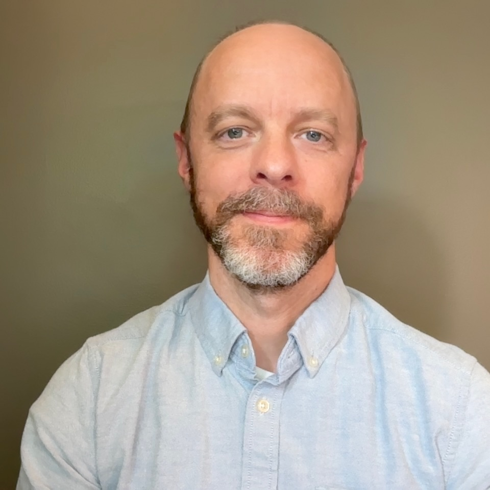
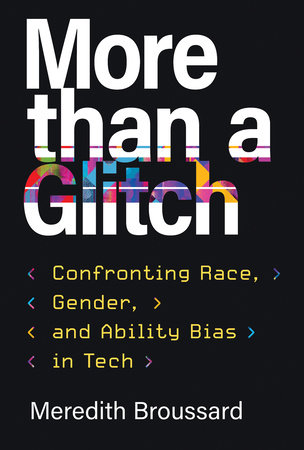
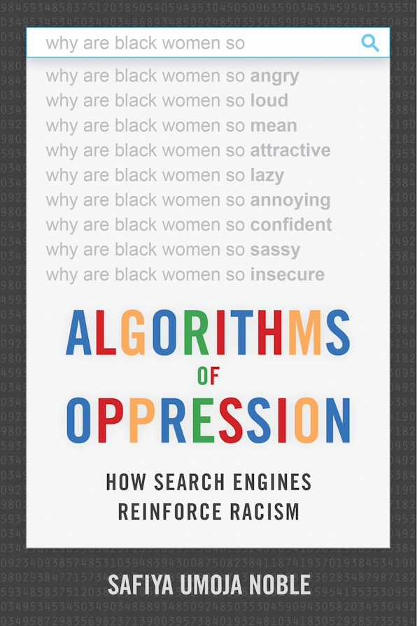
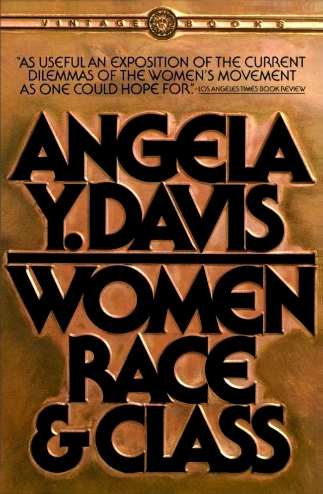

Welcome!
Welcome to our group's code and power resource-guide page. Here you can learn more about implicit bias, the implicit bias test, and intersectionality. We've collected links to articles, other websites, videos, we offer our thoughts and analysis of these issues, and we've assembled a small reading list for further exploration.
What is Intersectionality?
Intersectionality is a concept that Kimberle Crenshaw first explored in her 1989 essay for the Harvard Law Review Mapping the Margins:Intersectionality, Identity, Politics, and Violence against Women of Color (content warning for frank discussions of sexual violence). Patricia Hill Collins, sociologist and professor emerita at University of Maryland, offers this definition: "the critical insight that race, class, gender, sexuality, ethnicity, nation, ability, and age operate not as unitary, mutually exclusive entities, but as reciprocally constructing phenomena that in turn shape complex social inequalities."
Notions of intersecting identities' effects on power and privilege in society existed before Crenshaw's seminal article coined the phrase. For example, Angela Davis's influential collection of essays Women, Race, & Class, published in 1981, examines the ways in which White womens' elitism and racism excluded Black women from full participation in, and from receiving the full benefits of, the women's rights movements and suffrage. bell hooks's book "Ain't I a Woman: Black Women and Feminism" also first published in 1981 and named after a speech given by Sojourner Truth in 1851, discusses how enslaved Black womens' intersectional identities subjected them to both sexist patriarchal stereotypes and racism, and traces the effects of these forces on Black womens' position in society up to modern times.
The idea of intersectionality is now ubiquitous in critical scholarship, in sectors of popular culture, and has even become a flashpoint—along with Critical Race Theory—in politics. It shows up in articles like Tressie McMillan Cottom's article The Hustle Economy where she critiques American Hustle culture in the context of the systematic exclusion of people of color—especially women—from traditional employment; in critical analyses of education and disability; and in analyses of popular culture and power in articles like Elizabeth K. Keenan's article Intersectionality in Third-Wave Popular Music: Sexuality, Race, and Class.
Crenshaw, explaining intersectionality in her own words
What is Implicit Bias?
Implicit bias is a concept that emerged from implicit social cognition, a body of research in the field of psychology that attempts to explain ways in which people may hold—and act on—biases, prejudices, and stereotypes they may not be fully aware of. These biases are typically learned negative associations with particular marginalized or minoritized groups, and can operate against stated, concsiously held beliefs. The Stanford Encyclopedia of Philosophy offers an excellent intellectual history and deeper exploration of the topic.
The issue of implicit bias shows up in many fields, with sometimes drastic consequences. It shows up in healthcare workers in educators who work with the disabled, and is particularly salient in criminal justice work, where unexamined biases held by law enforcement officers , judges, juries, and lawyers can have significant impacts on those subject to biases.
The Implicit Bias Test or IBT
One way of measuring implicit bias is through tests like Harvard's Implicit Association Test, Harvard's famous version of an IBT or Implicit Bias Test. The purpose of tests like these is to shed light on our implicit biases by asking us to sort categories of people (such as lighter skinnned or darker skinned), alternating with sorting categories of value (good, bad). Test takers are prompted to sort as quickly as they can, using computer keys. The response time of this sorting is measured, and the difference in time between sorting pairs of categories and values is used to measure bias. For example, if a test taker has negative underlying associations for people with darker skin, it will be easier for them to sort successive pairings of images of people with dark skin and negative words, thus they may sort these pairings more quickly. Here's how Harvard's Project Implicit explains their test:
"The IAT measures the strength of associations between concepts (e.g., black people, gay people) and evaluations (e.g., good, bad) or stereotypes (e.g., athletic, clumsy). The main idea is that making a response is easier when closely related items share the same response key. When doing an IAT you are asked to quickly sort words into categories that are on the left and right hand side of the computer screen by pressing the “e” key if the word belongs to the category on the left and the “i” key if the word belongs to the category on the right."
These tests are not without controversy and debate, some say they distract from more important issues of explicit bias, others claim that the instability of results, and noise inherent in the data make them meaningless. This brief article in Scientific American gives a overview of these debates, and reminds us that implicit bias is real, repeatedly demonstrated in research, and has real-life consequences for those subject to it.
Group Thoughts
Our group discussed all of these topics when we first met at the beginning of class. Each of us were surprised and challenged by our results in taking the implicit bias test in one way or another, leading us to a deeper examination of implicit biases we may hold. We also discussed how useful intersectionality is as a theoretical framework for thinking about power and outcomes in society, and how some of us could make sense of our own experiences using this lens. We also considered opposing viewpoints and critiques of intersectionality—ultimately deciding that Crenshaw's conception of the framework to address a real problem she saw in the legal system, and its subsequent broader adoption in critical theory and popular culture were positive developments in work towards equity and justice in the United States and beyond.
Hover to reveal our thoughts on the IBT, Implicit Bias, and Intersectionality
Alyssa on IBT
It would be interesting to take the same IBT test everyday for a week to remove any self-correcting tendencies, be able to focus more on the prompts and less on the physical act of inputting answers, and average out any incidental distractions that might induce noise into the test results...
Aymen on Implicit Bias
Racism isn't bound to a singular act or way of acting, it's present in many aspects of life whether we know it or not, it's embedded in social systems, and many people practice it without intention or even knowing that they're doing it. It's important to know your own prejudices in order to create a better social environment.

Casey on Intersectionality
I appreciate how concrete and logically consistent Crenshaw's metaphor of the intersection is. It vividly illustrates just how dangerous the forces at work in society can be for folks at the intersection of multiple minoritized identities.
Reading List

More Than a Glitch
Data scientist and AI researcher Merideth Broussard's exploration of bias in technology, the myth of tech-neutrality, and case for excising problematic algorithms at the root.

Algorithms of Oppression
Safiya Umoja Noble's book lays bare the biases built into search engines and search results.

Women, Race, & Class
Angela Y. Davis's classic shows how whiteness and elitism complicated and hindered social justice movements in America.